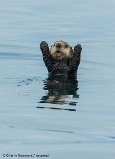

Las nutrias son mamiferos provenientes de un proceso evolutivo muy complicado que da lugar a varias variantes en la actualidad.
Dichos tipos son:
- Nutria de río
- Nutria marina
- Nutria gigante
Las nutrias son animales muy inteligentes y sociales, que viven en grupos de 2 a 20 individuos.
Su dieta es muy concreta y consta de:
Pueden No pueden Peces Comer carne Insectos Comer algunas plantas Foto del mes:

Volver a HUB